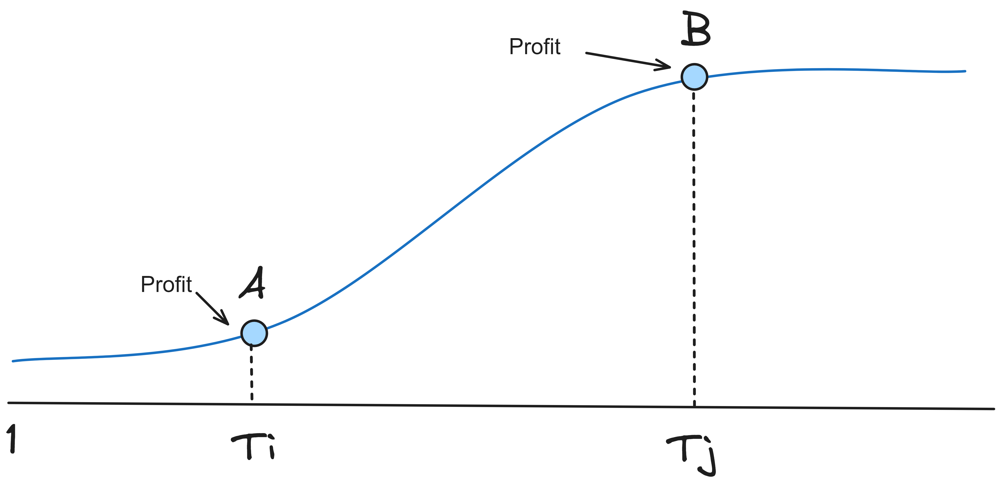

Chương 1 Tháng 01 2024
Ngày 15
Hôm nay mình đã đọc gì
1.0.1 Efficient Feature Selection via Genetic Algorithms
Đây là một bài viết trên Medium nói về việc sử dụng Generic Algorithms. Generic Algorithms Tiếng Việt được gọi là Giải thuật di truyền, là thuật toán đầu tiên mình học được ngay khi bắt đầu học môn Máy học thống kê ở trường. Mình đã áp dụng nó vào bài toán tìm nghiệm xấp xỉ của một phương trình đa thức.
Về Giải thuật di truyền có các định nghĩa chính:
Population (dân số)
Xác suất đột biến
Xác suất lai chéo
Chiến lược chọn các phần tử con
Để hiểu rõ hơn các bạn có thể tham khảo ở Wiki (https://en.wikipedia.org/wiki/Genetic_algorithm)
Tóm gọn lại bài viết này xem danh sách N features là một chuỗi gen có độ dài là N và chứa các giá trị 1 nghĩa là feature tại vị trí i sẽ được chọn và bằng 0 nghĩa là feature tại vị trí i sẽ không được chọn
Thuật toán sẽ khởi tạo Một quần thể gồm 8 chuỗi gen khác nhau và tiến hành đột biến hoặc lai chéo giữa chúng để ra chuỗi gen mới -> tập Features đã được chọn. Sau đó sẽ dùng phương pháp đánh giá. Bài này sử dụng code dựa trên thư viện https://github.com/DEAP/deap
Và code đầy đủ có tại https://github.com/FlorinAndrei/fast_feature_selection
1.0.2 Data Envelopment Analysis
Hôm nay mình đã đọc Chương một của cuốn sách Data Envelopment Analysis Của tác giả William W. Cooper , Lawrence M. Seiford , Kaoru Tone.
Cuốn sách này tuy xuất bản năm 2007 nhưng khá có ích đối với việc mình đang làm là đánh giá chất lượng.
Đánh giá Hiệu suất là gì?
Khi chúng ta có đầu vào, và nhận được kết quả, chúng ta hay đánh giá hiệu suất của kết quả xem với đầu vào như thế thì kết quả liệu có tốt không. Một số ví dụ cơ bản: Giá thành/sản phẩm, Lợi nhuận/sản phẩm.
\[ \frac{Output}{Input} \]
Công thức trên được gọi là thước đo hiệu quả. Chúng ta có thể mở rộng công thức trên với Nhiều đầu vào (Inputs) và nhiều đầu ra (Outputs)
 Độ dốc của đường nối với mỗi điểm và gốc tọa độ tương ứng với Sales/ Employee ( hiệu quả).
Độ dốc của đường nối với mỗi điểm và gốc tọa độ tương ứng với Sales/ Employee ( hiệu quả).
Đường có độ dốc cao nhất (nối với điểm B) được gọi là Efficient Frontier (Đường biên hiệu quả).
Các điểm sẽ nằm cùng 1 phía so với đường thẳng, hoặc ở trên, hoặc ở dưới.
Vì đường biên này bao bọc các điểm dữ liệu, nên phân tích này được gọi là Data Envelopment Analysis.
Chúng ta có thể vẽ một đường thống kê hồi quy y=0.622x để ước lượng mối quan hệ tuyến tính giữa input và output.
Đường hồi quy này đi qua chính giữa của tập dữ liệu, do đó chúng ta có thể xem các điểm ở phía trên đường là hiệu quả tốt và điểm dưới là chưa tốt, khoảng cách giữa điểm tới đường hồi quy chính ta mức độ hiệu quả/không hiệu quả
Khoảng cách từ các điểm đến đường Efficient Frontier nêu lên độ lệch so với điểm tốt nhất

Ngày 16
1.0.3 Chuẩn bị tài liệu cho khóa Data Analyst
Tập trung vào các nội dung như Lambda function là gì, map, reduce,filter kết hợp cùng với lambda function
Iterable và Iterator là gì
- Iterable là kiểu cấu trúc có thể dùng vòng lặp for được, thay vì dùng index mình có thể for phần tử trong cấu trúc
- Iterator là kiểu duyệt của các Iterable, để tạo iterator mình có thể áp dụng hàm
iter(a). Để duyệt phần tử kế tiếp mình dùngnext(). Nếu không còn phần tử nào sẽ trả về lỗi StopIteration - Các kiểu Iterator như enumerate, zip
Tiếp theo là List comprehension, dict comprehension
Các kiểu collections mới
- Counter : dùng để đếm nhanh số lượng các phần tử
- Defaultdict: handle lỗi khi key không có trong dict, thường trả về giá trị mặc định tùy mình set
- Namedtuple: định nghĩa một tuple có cấu trúc, tên của từng phần tử
1.0.4 Step-by-Step Guide to Designing a User-Friendly Application
Là một nhà khoa học dữ liệu, các kỹ năng thu thập, xử lý và phân tích dữ liệu cũng như đào tạo các mô hình phức tạp của bạn sẽ cung cấp những hiểu biết sâu sắc có giá trị giúp hướng dẫn các bên liên quan chính đưa ra quyết định đúng đắn. Tuy nhiên, bạn có thể thường xuyên phải đối mặt với những thách thức trong việc truyền đạt những kết quả này một cách hiệu quả. Việc dựa vào các tài liệu tĩnh có thể không thể hiện được toàn bộ tiềm năng của mô hình của bạn và thu hút sự quan tâm của người dùng doanh nghiệp. Không có gì có thể khó chịu hơn việc công việc của bạn không được tận dụng tối đa tiềm năng của nó. Đây là nơi một ứng dụng năng động, tương tác phát huy tác dụng. Nó biến công việc của bạn thành một công cụ sống động, mời các bên liên quan đến một môi trường khám phá, cộng tác và ra quyết định theo thời gian thực.
Xác định mục tiêu ứng dụng
Đầu tiên, điều quan trọng là phải xác định được câu hỏi “Tại sao phải tạo ra ứng dụng”, dưới đây là một số câu hỏi gợi ý
- Ứng dụng của bạn giải quyết vấn đề gì
- Nó tăng thêm giá trị cho người dùng như thế nào
- Những điểm chính rút ra từ ứng dụng là gì
| Mục tiêu | App |
|---|---|
| Người dùng muốn biết họ nên gọi cho ai từ một danh sách rộng lớn | Giới thiệu khách hàng mới tiềm năng |
| Người dùng muốn xác định ai có nguy cơ rời đi và chiến lược nào có thể giữ chân họ | Đề xuất chiến lược giữ chân khách hàng |
| Người dùng muốn đảm bảo mô hình đáng tin cậy của mô hình | Chứng minh độ tin cậy và độ chính xác |
Xác định người dùng của bạn
Ví dụ Sale manager:
- Không quá kỹ thuật
- Ưu tiên các sơ đồ thông thường và giải thích văn bản
- Cần hành động kịp thời hàng ngày
- Quan tâm đến hiệu suất của mô hình và khả năng giải thích
Lập kế hoạch cho cấu trúc và tính năng của ứng dụng
Ngày 17
1.0.5 Chữa bài
Là một bài về dự đoán chất lượng nguồn nước gồm các thông số cơ bản như
- Location
- Temp
- pH
- EC
- Do
- Turb
- TN
- TP
Và nhãn là Toc
Phần này mình có đọc code của một thầy bên Hàn, thầy áp dùng fill outlier bằng IQR rất đơn giản
loại bỏ các điểm nằm ngoài Q3 + 3 * IQR và Q1 - 3 * IQR. Lần này thầy dùng hệ số bằng 3 chứ không bằng 1 như mặc dịnh
Sau đó thầy vẽ các phân phối của nó ra trước khi xử lý
def show_hist_by_target(df, columns):
sns.set(font_scale=1.0)
sns.set_style('white')
for column in columns:
fig, axs = plt.subplots(nrows=1, ncols=2, figsize=(12, 3))
sns.boxplot(data=df, y=column, ax=axs[0])
sns.histplot(data=df, x=column, ax=axs[1], kde=True, bins=200, stat='frequency')
plt.subplots_adjust(hspace=0.8,wspace=0.6)Tiếp theo thầy sử dụng ktest và normal test xem dữ liệu có bị skewness không
for k in df.columns:
test_stat, p_val = stats.kstest(df[k], 'norm')
print("Test-statistics : {:.3f}, p-value : {:.3f}, skewness : {:.3f}".format(test_stat, p_val, df[k].skew()))
# (Kolmogorov-Smirnov) kstest / shapiro
for k in df.columns:
test_stat, p_val = stats.kstest(df[k], 'norm')
print("Test-statistics : {:.3f}, p-value : {:.3f}, skewness : {:.3f}".format(test_stat, p_val, df[k].skew()))
# (Kolmogorov-Smirnov) kstest / shapiroThầy dùng R2 score để tính, sử dụng 2 cách là dùng thư vienj sklearn và dùng công thức điều chỉnh
##############################################################################################################
def adj_r2_score(y_true, y_pred, p=x_train_scaled.shape[1]):
return 1-(1-r2_score(y_true, y_pred)) * (len(y_true)-1) / (len(y_true) - p - 1)Thầy dùng Scaler là Robust Scaler, trước đó đã test box cox nhưng vì có tồn tại dữ liệu âm nên không dùng box-cox.
Giải pháp của mình là:
- Remove các dòng âm và bằng 0 -> khoảng 500 dòng trên 300k dòng
- Dùng thuật toán yeo-johnson tương tự như box cox nhưng có thể áp dụng cho số âm
Mình cũng hướng dẫn bạn ấy sử dụng KFold thay vì train_test_split vì train_test_split có khả năng bị bias vì không xác thực chéo trên toàn bộ dữ liệu( bị bias). Kết quả mình test thử train_test_split với nhiều seed khác nhau thì kết quả R2 không đồng đều.
Ngày 18
1.0.6 Kết hợp ChatGPT vào Named Entity Recognition
1.0.6.1 Giới thiệu về Named Entity Recognition
Named Entity Recogtition là bài toán nhận dạng thực thể, một số thực thể thông dùng như
- PERSON : Tên người
- LOCATION: Địa chỉ
- DATE: Ngày tháng năm
- ORG: Tên các tổ chức.
Ngoài ra tùy vào yêu cầu của mỗi bài toán có thể có những Named Entity Recoginition.
- Bài toán trích xuất thông tin xe thì có thêm BRAND, MODEL, YEAR, CAR_TYPE ….
- Bài toán trích xuất thông tin từ các sản phẩm trên các sàn thương mại điện tử : BRAND, PRODUCT_NAME, SIZE, PRICE
Dựa vào các thông tin được trích xuất đó, chúng ta có thể làm các bài toán như sau: - Lưu trữ dữ liệu : sau khi trích xuất thông tin về một item, chúng ta có thể lưu trữ các thông tin đó vào các bảng có cấu trúc hoặc lưu vào SQL - Các bài toán Recommendation: Dựa vào các thông tin trích xuất đó, chúng ta có thể đưa ra gợi ý các sản phẩm cho người dùng. Ví dụ như: - Người dùng đang xem các bài báo liên quan đến xe, chúng ta có thể trích xuất hãng xe, dòng xe từ bài báo mà người dùng đọc, sau đó gợi ý các sản phẩm xe cùng với hãng đó. - Product Matching: Trên các sàn thương mại điện tử, nhiều nhà cung cấp có thể cùng bán một sản phẩm, việc trích xuất thông tin của các sản phẩm có thể giúp gom các sản phẩm giống nhau về cùng một nhóm, qua đó có thể nắm bắt được giá cả, sức mua của sản phẩm đó.
1.0.6.2 ChatGPT
Để có thể nhận diện được các thực thể, thông thường chúng ta sẽ huấn luyện các mô hình với dữ liệu huấn luyện được gán nhãn trước. Một số ví dụ về huấn luyện các mô hình
https://www.analyticsvidhya.com/blog/2022/06/how-to-train-an-ner-model-with-huggingface/
https://blog.futuresmart.ai/building-a-custom-ner-model-with-spacy-a-step-by-step-guide
Ngoài ra chúng ta cũng có thể tận dụng sức mạnh của chatGPT
dưới đây là một ví dụ về prompt để lấy brand và model xe
messages=[
{"role": "system", "content": "Perform Name Entity Recognition task \
to extract car brand and car model name from paragraphs"},
{"role": "system", "content": "Output format: a string v1:v2 where v1 is car brand and v2 is car model for each input.\
If not found car brand then v1 = None. If not found car model then v2 = None"},
{"role": "user", "content": text}
],Kết quả trả ra
| text | brand | model | |
|---|---|---|---|
| 0 | Toyota Land Cruise LC300 is a good and powerfu… | Toyota Land Cruiser | LC300 |
| 1 | I am a big fan of Jeep Wrangle Rubicon, an off… | Jeep | Wrangler Rubicon |
| 2 | Black Friday, buy cars at great prices | None | None |
1.0.7 Phân tích Shop Branch

Bài toán của mình là tìm ra các vị trí A, B sao cho - Bắt đầu từ A: Profit của các chi nhánh tăng vọt - Sau khi qua B: Profit của các chi nhánh đi ngang
Sau đó đưa ra các điểm Ti, Tj là lần lượt là thời gian đạt được điểm A và điểm B
Dựa vào đó, phòng ban Kinh doanh sẽ biết được các chi nhánh nào đang hoạt động không hiệu quả để đưa ra các giải pháp phù hợp